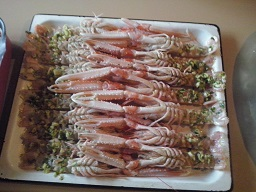

Cigalas con ajo, perejil, aceite y sal gorda

Ingredientes:
- Cigalas
- Ajo
- Perejil
- Aceite
- Sal gorda
Realización:
Se abren las cigalas, se espolvorean el ajo picado,
el perejil picado, un chorro de aceite y sal.
Se coloca en una bandeja de horno con la parte abierta
hacia arriba y se meten en el horno a media altura con el
grill hasta que se doren.